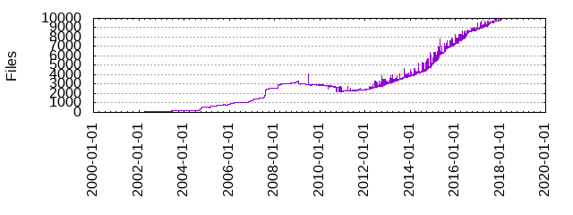

Files
- Total files
- 9949
- Total lines
- 387303
- Average file size
- 1392.07 bytes

| Extension | Files (%) | Lines (%) | Lines/file |
|---|
| 428 (4.30%) | 30352 (7.84%) | 70 |
| WARNING | 1 (0.01%) | 4 (0.00%) | 4 |
| arc | 1 (0.01%) | 81 (0.02%) | 81 |
| args | 1 (0.01%) | 1 (0.00%) | 1 |
| arm | 1 (0.01%) | 771 (0.20%) | 771 |
| bd | 1 (0.01%) | 34 (0.01%) | 34 |
| bfin | 1 (0.01%) | 102 (0.03%) | 102 |
| bit | 1 (0.01%) | 0 (0.00%) | 0 |
| br | 1 (0.01%) | 53 (0.01%) | 53 |
| buildroot | 2 (0.02%) | 47 (0.01%) | 23 |
| c | 24 (0.24%) | 15504 (4.00%) | 646 |
| c_shipped | 3 (0.03%) | 5244 (1.35%) | 1748 |
| cache | 2 (0.02%) | 111 (0.03%) | 55 |
| cc | 1 (0.01%) | 1795 (0.46%) | 1795 |
| cfg | 84 (0.84%) | 2450 (0.63%) | 29 |
| cmake | 1 (0.01%) | 7 (0.00%) | 7 |
| cmd | 29 (0.29%) | 490 (0.13%) | 16 |
| conf | 31 (0.31%) | 652 (0.17%) | 21 |
| config | 101 (1.02%) | 5461 (1.41%) | 54 |
| csky | 1 (0.01%) | 48 (0.01%) | 48 |
| css | 2 (0.02%) | 444 (0.11%) | 222 |
| csv | 1 (0.01%) | 53 (0.01%) | 53 |
| dts | 1 (0.01%) | 247 (0.06%) | 247 |
| ext | 1 (0.01%) | 384 (0.10%) | 384 |
| fragment | 16 (0.16%) | 144 (0.04%) | 9 |
| glade | 1 (0.01%) | 661 (0.17%) | 661 |
| gperf | 1 (0.01%) | 47 (0.01%) | 47 |
| guess | 1 (0.01%) | 1456 (0.38%) | 1456 |
| h | 12 (0.12%) | 1531 (0.40%) | 127 |
| hash | 2228 (22.39%) | 6237 (1.61%) | 2 |
| header | 1 (0.01%) | 31 (0.01%) | 31 |
| host | 63 (0.63%) | 1215 (0.31%) | 19 |
| html | 9 (0.09%) | 4736 (1.22%) | 526 |
| ico | 1 (0.01%) | 3 (0.00%) | 3 |
| in | 2258 (22.70%) | 53786 (13.89%) | 23 |
| inc | 1 (0.01%) | 310 (0.08%) | 310 |
| ini | 4 (0.04%) | 186 (0.05%) | 46 |
| its | 1 (0.01%) | 37 (0.01%) | 37 |
| js | 1 (0.01%) | 94 (0.02%) | 94 |
| json | 4 (0.04%) | 48 (0.01%) | 12 |
| l | 1 (0.01%) | 363 (0.09%) | 363 |
| legacy | 2 (0.02%) | 3150 (0.81%) | 1575 |
| logrotate | 1 (0.01%) | 9 (0.00%) | 9 |
| lua | 1 (0.01%) | 184 (0.05%) | 184 |
| m4 | 1 (0.01%) | 88 (0.02%) | 88 |
| m68k | 1 (0.01%) | 40 (0.01%) | 40 |
| microblaze | 1 (0.01%) | 14 (0.00%) | 14 |
| mips | 1 (0.01%) | 241 (0.06%) | 241 |
| mk | 2343 (23.55%) | 91432 (23.61%) | 39 |
| network | 1 (0.01%) | 4 (0.00%) | 4 |
| nios2 | 1 (0.01%) | 8 (0.00%) | 8 |
| options | 12 (0.12%) | 488 (0.13%) | 40 |
| or1k | 1 (0.01%) | 8 (0.00%) | 8 |
| pam | 5 (0.05%) | 60 (0.02%) | 12 |
| patch | 1788 (17.97%) | 131549 (33.97%) | 73 |
| pc | 18 (0.18%) | 194 (0.05%) | 10 |
| pl | 1 (0.01%) | 640 (0.17%) | 640 |
| png | 28 (0.28%) | 3652 (0.94%) | 130 |
| powerpc | 1 (0.01%) | 218 (0.06%) | 218 |
| py | 39 (0.39%) | 2577 (0.67%) | 66 |
| rules | 1 (0.01%) | 1 (0.00%) | 1 |
| script | 1 (0.01%) | 82 (0.02%) | 82 |
| service | 64 (0.64%) | 798 (0.21%) | 12 |
| sh | 78 (0.78%) | 2280 (0.59%) | 29 |
| socket | 2 (0.02%) | 18 (0.00%) | 9 |
| sparc | 1 (0.01%) | 34 (0.01%) | 34 |
| sub | 1 (0.01%) | 1815 (0.47%) | 1815 |
| supp | 1 (0.01%) | 212 (0.05%) | 212 |
| svg | 1 (0.01%) | 2 (0.00%) | 2 |
| tcl | 1 (0.01%) | 358 (0.09%) | 358 |
| template | 2 (0.02%) | 79 (0.02%) | 39 |
| theme | 1 (0.01%) | 2 (0.00%) | 2 |
| tvheadend | 1 (0.01%) | 6 (0.00%) | 6 |
| txt | 217 (2.18%) | 13909 (3.59%) | 64 |
| types | 1 (0.01%) | 205 (0.05%) | 205 |
| woff | 1 (0.01%) | 82 (0.02%) | 82 |
| x86 | 1 (0.01%) | 292 (0.08%) | 292 |
| xcf | 1 (0.01%) | 1290 (0.33%) | 1290 |
| xtensa | 2 (0.02%) | 88 (0.02%) | 44 |
| y | 1 (0.01%) | 733 (0.19%) | 733 |
| yml | 1 (0.01%) | 292 (0.08%) | 292 |